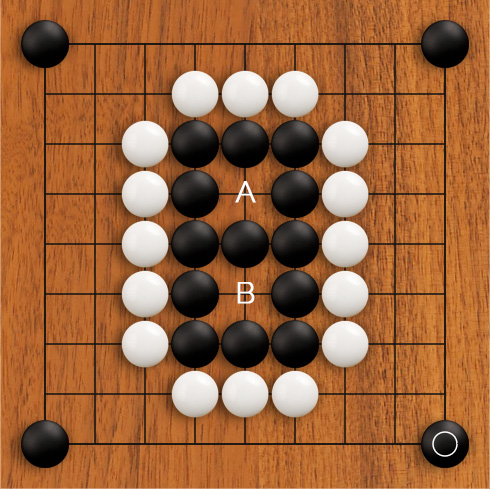

The most basic thing about living groups you will hear everywhere is two eyes, two eyes, two eyes! What does it mean? Why does everyone love two eyes so much? It is simple. Thanks to the suicide/capture rule, there can never be a stone on the board that has no liberties. And that by turn means, that a group that has at least 2 eyes is utterly impossible to capture (unless you fill the eye yourself).
A group with two separate eyes is impossible to capture.
Check it out. Black is COMPLETELY surrounded in the center of the board. Only two liberties left. It is white's turn. And black is laughing.

Imaging trying to capture black. You can't. You can't play at A because it would be a suicide. You can't play at B to take away a liberty, because it would be a suicide. You can't play two moves at once, because that would be cheating. There is nothing you can do to that black group. Only if it were one eye, you can fill that if you capture with that move. But not like this. Even if black does not respond at all he/she cannot be captured.
Does that mean that you have to create two eyes like this for every group? No. But you should make sure that each of your group has the possibility of creating two real eyes should things turn nasty. Did you notice how I said real eyes? Yeah. It will be more clear after you study the examples, but (although it may sound obvious) you really need to make sure that the eyes are well connected to the rest of the group. If part of the eye can be captured, then the whole group will collapse.
Your browser sucks. Download something up to date.
Before trying to kill a group by taking away the eyes, you need to make sure that it is safely surrounded and cannot escape. Otherwise you just wasted a move and gave your opponent a free prisoner if he/she manages to break out and live.
Actually, let me get back to this one later
EZ , I got this, what's next?